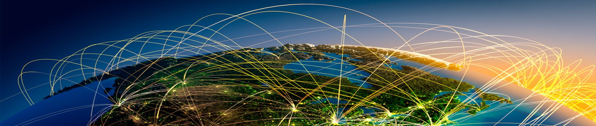
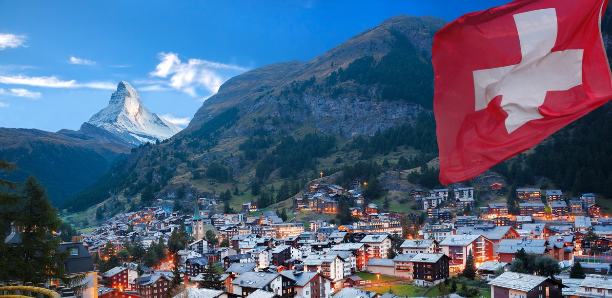
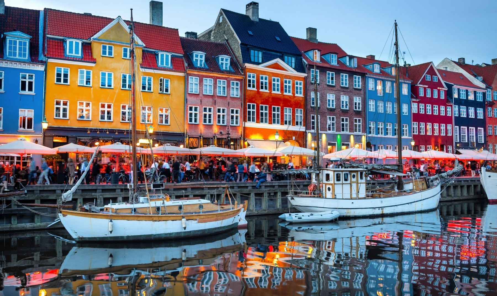
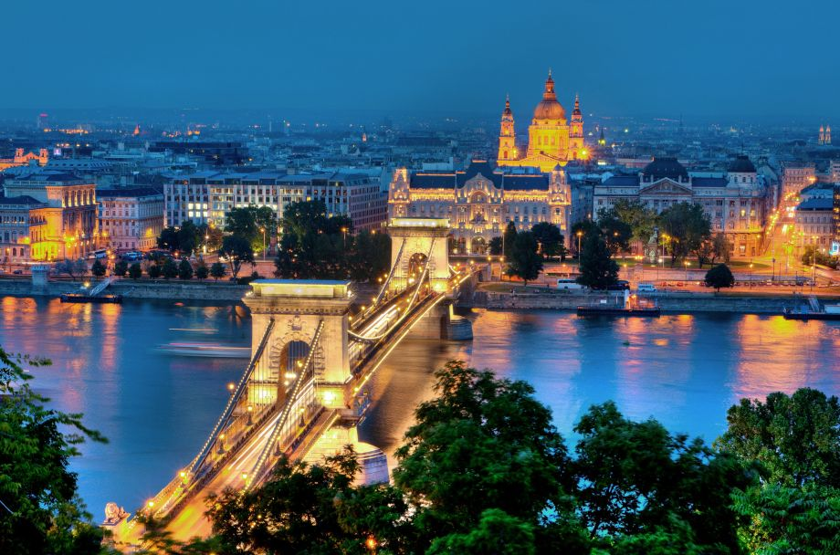

<!DOCTYPE html>
<html lang="en">
<head>
    <meta charset="UTF-8">
    <meta http-equiv="X-UA-Compatible" content="IE=edge">
    <meta name="viewport" content="width=device-width, initial-scale=1.0">
    <title>Globalizacion</title>

    <link href="https://cdn.jsdelivr.net/npm/bootstrap@5.2.0-beta1/dist/css/bootstrap.min.css" rel="stylesheet" integrity="sha384-0evHe/X+R7YkIZDRvuzKMRqM+OrBnVFBL6DOitfPri4tjfHxaWutUpFmBp4vmVor" crossorigin="anonymous">

    <link rel="stylesheet" href="css/paisesStyle.css">

    <link rel="stylesheet" href="css/materialize.css">


    
    <!-- Compiled and minified CSS -->
    <link rel="stylesheet" href="https://cdnjs.cloudflare.com/ajax/libs/materialize/1.0.0/css/materialize.min.css">

         
    <!DOCTYPE html>
  <html>
    <head>
      <!--Import Google Icon Font-->
      <link href="https://fonts.googleapis.com/icon?family=Material+Icons" rel="stylesheet">
      <!--Import materialize.css-->
      <link type="text/css" rel="stylesheet" href="css/materialize.min.css"  media="screen,projection"/>

      <!--Let browser know website is optimized for mobile-->
      <meta name="viewport" content="width=device-width, initial-scale=1.0"/>
    </head>

    <body>

      <!--JavaScript at end of body for optimized loading-->
      <script type="text/javascript" src="js/materialize.min.js"></script>
    </body>
  </html>


</head>

<body>

    <nav class="navbar navbar-expand-lg bg-light barra">
        <div class="container-fluid">
          <a class="navbar-brand" href="index.html">Inicio</a>
          <button class="navbar-toggler" type="button" data-bs-toggle="collapse" data-bs-target="#navbarNav" aria-controls="navbarNav" aria-expanded="false" aria-label="Toggle navigation">
            <span class="navbar-toggler-icon"></span>
          </button>

          <div class="collapse navbar-collapse" id="navbarNav">
            <ul class="navbar-nav">
              <li class="nav-item">
                <a class="nav-link active" aria-current="page" href="paises.html">Países Más Globalizados</a>
              </li>        
              

            </ul>        
        </div>
    </nav>

 <br>

 

 <div class="container">
  <div class="row">

      <div class="col" id="column">
    
<h2 class="z-depth-5"> Los 10 Países más Globalizados </h2>
        
    </div>
  </div>  
</div>    


<hr>

 <div class="container">
    <div class="row">
          
      <div class="col s2"> 1. Holanda<br>
                                                         
              <br><br>
                La exportación de bienes y servicios contribuye a más del 30% del producto interno bruto de Holanda. Las estrellas de la exportación son las máquinas, el segundo lugar el gas,  el tercer lugar lo ocupan las plantas y los bulbos de tulipanes.

                Entre los diez primeros productos de exportación están la carne, los lácteos, las verduras y las papas. Holanda es, después de Alemania, el segundo mayor exportador de la Unión Europea. Y la mayor parte de sus productos son comprados por los demás países de la Unión, siendo Alemania el mayor cliente y socio comercial de Holanda y el segundo mayor proveedor de Alemania.  
      </div>

      <div class="col s2">2. Irlanda<br><br>
             
             <br><br>
             El Premio Nobel de Economía Paul Krugman calificó la estimación como "la economía de los duendes", mientras el diario Financial Times dijo que el cálculo era comparable a las obras de los novelistas James Joyce y Flann O'Brien.

             "Esta es básicamente una cifra ridícula. Si fuera cierta, significaría que Irlanda estaría creciendo a una tasa que triplica la de economías pobres y pequeñas, que usualmente encabezan la lista de los países que más crecen.
      </div>

      <div class="col s2">3. Bélgica<br><br>
                       
                      <br><br>
                        La moderna economía de mercado de Bélgica se beneficia de la privilegiada localización geográfica del país en Europa, por una red de transportes bastante desarrollada y por una base industrial y comercial diversificada.La industria está concentrada principalmente en la región de Flandes, al norte.

                      Con pocos recursos naturales, el país importa grandes cantidades de materias primas y exporta principalmente manufacturados. El resultado es una economía muy dependiente de los mercados mundiales.
                      Cerca de 3/4 del comercio del país es hecho con otros países de la Unión Europea. 
      </div>

      <div class="col s2">4. Austria<br><br>
             
            <br><br>
          Austria gozó en los últimos 72 años de una gran estabilidad y prosperidad.
          
          Su economía está definida como social de mercado, con empresas privadas y públicas. Tiene una economía bien desarrollada gracias a la gran vertebración de su mercado que se refleja en el alto nivel de vida de sus habitantes.

          Gran parte la industria fue nacionalizada y ha impulsado reformas estructurales, como la liberalización de las telecomunicaciones, la energía y el tabaco, la privatización de bancos, la industria del acero y el petróleo. Le siguieron fusiones de empresas nacionales con extranjeras, en sectores como la alimentación, el comercio, la construcción, la banca, el acero, el petróleo, el tabaco y las telecomunicaciones.
      </div>

      <div class="col s2">5. Suiza<br>
             
          <br><br>
          Suiza obtuvo el primer lugar en el ranking, con un PIB per cápita de la globalización con un crecimiento promedio de 1 190 euros por año entre 1990 y 2016. 

         La globalización puede generar claramente mejoras en el bienestar. El proteccionismo no es el camino correcto. Sin embargo, la globalización debe configurarse de tal manera que el enfoque esté en las personas. Esta es la única forma en que podemos cumplir nuestra promesa de éxito. 
      </div>

    </div>

<br><br>
</div>

<div class="container">
    <div class="row">
      <div class="col s2">6. Singapur<br>
              
              <br><br> 
              Su economía es de libre mercado. Ha sido clasificada por el Foro Económico Mundial como la más abierta del mundo, la tercera menos corrupta por Transparencia Internacional, la más favorable a los negocios por el Banco Mundial y el grado más alto de libertad económica en el mundo. Tiene tipos impositivos bajos y el segundo PIB per cápita más alto del mundo en términos de paridad del poder adquisitivo. 

              Las empresas estatales desempeñan un papel importante en la economía de Singapur.  La economía de Singapur es uno de los principales financiadores de la salida de inversión extranjera directa en el mundo. 
      </div>

      <div class="col s2">7. Dinamarca<br>
             
            <br><br>
              Por su naturaleza pobre en recursos geológicos, Dinamarca centró su economía en la actividad agrícola, gracias a sus granjas, a la explotación de bombas y a la industria naval. Han impulsado la industrialización de su país y han favorecido el establecimiento de un modelo de Estado de bienestar, garantizando el acceso a servicios públicos desde la firma del acuerdo de Kanslergade en 1933 y desarrollando una economía mixta altamente desarrollada.

              Tien una ingeniería avanzada, inviernos fríos, muy forestado y de baja densidad de población; nombrado el país menos corrupto del mundo (2010), con alto crecimiento económico desde 1987 y, según estudios, el país donde los habitantes son más felices y uno de los mejores del mundo para vivir.
      </div>

      <div class="col s2">8. Suecia<br>
             
            <br><br>
              Cerca del 84% de la población vive en zonas urbanas. La conservación de la naturaleza, la protección del medio ambiente y la eficacia energética son una prioridad en la formulación de políticas.

              La mejora de los transportes y las comunicaciones ha permitido la explotación a gran escala de bienes naturales, sobre todo la madera y el mineral de hierro. La escolarización universal y la industrialización permitieron al país desarrollar una exitosa industria manufacturera. Tiene una rica oferta de energía hidráulica, pero carece de petróleo y de yacimientos de carbón importantes. 
       </div>

        <div class="col s2">9. Hungría<br>
             
            <br><br>
              Hungría, al entrar a la Unión Europea esperaba modernizar su agricultura, estabilizar su economía y asegurarla en las crisis, modernizar y ampliar sus infraestructuras y recibir ayudas económicas para el desarrollo de sus regiones. Hizo una transición de una economía centralizada y planificada a una economía de mercado en los años 1990. Hoy el sector privado responde del 80% del Producto Interno Bruto del país. Las inversiones y la posesión de empresas húngaras por extranjeros acumulan miles de millones de dólares. 
              
              Hungría tiene unas condiciones agro-climáticas muy favorables.

              Negoció la prohibición del acceso libre de no residentes a la propiedad de tierras agrícolas durante un período transitorio de 7 años desde el 1 de mayo de 2004 (ampliable a otros 3 más). Evitando la capitalización del sector, y pérdida de su competitividad. 
        </div>

        <div class="col s2">10. Canadá<br>
             
            <br><br>
          Canadá es un país industrial y tecnológicamente pionero y avanzado, ampliamente autosuficiente en energía gracias a sus relativamente extensos depósitos de combustibles fósiles y a la amplia generación de energía nuclear y energía hidroeléctrica. Siendo uno de los países más desarrollados, tiene una economía diversificada, que la hace independiente por sus grandes yacimientos y abundantes recursos naturales así como del comercio, particularmente con los Estados Unidos y México. En la actualidad es miembro de la OEA, el G-7, el G-20, la OTAN, la OCDE, la OMC, la UKUSA, la APEC, la Mancomunidad de Naciones, la Francofonía y de la Organización de las Naciones Unidas. Es considerado uno de los países con mejor calidad de vida.
        </div>
    </div>
</div>


    <br>

    <footer>

           <div class="textofooter">
          <hr width="100%" color= "white">
          <div>
      <p>
          <pre>
          Darley Genaro Marín Gómez
          Corporación Universitaria Iberoamericana
          Facultad de Ciencias Humanas y Sociales
          Psicología 
          2022
          </pre>
      </p>
   
  </footer>

    
    <script src="js/script.js"></script>        
        
    <script src="https://cdn.jsdelivr.net/npm/bootstrap@5.2.0-beta1/dist/js/bootstrap.bundle.min.js" integrity="sha384-pprn3073KE6tl6bjs2QrFaJGz5/SUsLqktiwsUTF55Jfv3qYSDhgCecCxMW52nD2" crossorigin="anonymous"></script>


    <!-- Compiled and minified JavaScript -->
    <script src="https://cdnjs.cloudflare.com/ajax/libs/materialize/1.0.0/js/materialize.min.js"></script>
       


</body>
</html>